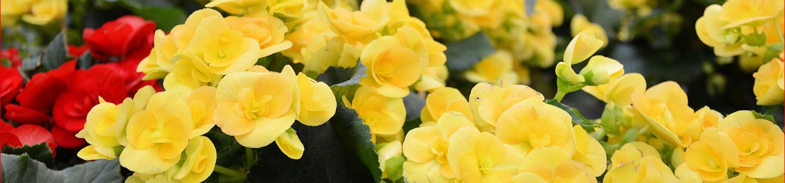
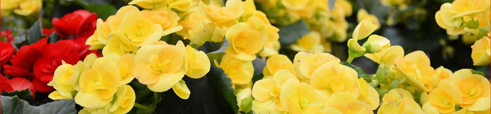

Helpful Tips
Websites/Facebook Pages

Sharing her birding experiences in the beautiful woodlands of Western Newfoundland.
Nature Canada is the oldest national nature conservation charity in Canada. Over the past 75 years, Nature Canada has helped protect over 63 million acres of parks and wildlife areas in Canada and countless species that depend on this habitat.
Interesting Articles on Plants - IFLScience CLICK HERE TO READ ARTICLES - Not all GMO Plants Are Created Equally: It's The Trait, Not The Method, That's Important - IFLScience CLICK HERE TO READ ARTICLES
The Garden Gate: A Preface to the Story Your Garden Wants to Tell - Houzz CLICK HERE TO READ ARTICLE
Growing Food in Containers - West Coast Seeds CLICK HERE TO READ ARTICLE

9 Tips for Growing Trees in Containers - Urban Farm Online - CLICK HERE TO READ ARTICLE
Tips
Rain Barrel Program
Rain barrels are used to collect and store water for outdoor usage such as watering your garden, washing outside surfaces and washing your car. Using rainwater will reduce the amount of tap water you use, which will save you money on your utility bill. CLICK HERE TO READ ARTICLE